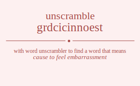

The word found after unscrambling grdcicinnoest means that cause to feel embarrassment, cause to lose one's composure, causing an emotional disturbance, .
grdcicinnoest has jumble solution. Please see which words made after unscrambling grdcicinnoest.
Daily Jumble Solution: disconcerting
You can use following links to see other word jumble solutions for the same day
ccikl gnnini grdcicinnoest rugdo tdosed

Unscrambled 13 letter words from grdcicinnoest
disconcerting
Unscrambled 11 letter words from grdcicinnoest
constringed
considering
codirecting
Unscrambled 10 letter words from grdcicinnoest
renditions
grindstone
stringendo
incretions
constringe
sectioning
directions
discretion
discerning
rescinding
concerting
concreting
conceiting
disconcert
disconnect
dicentrics
coincident
Unscrambled 9 letter words from grdcicinnoest
ignitrons
insertion
nitrogens
sortieing
inserting
sintering
ingestion
orienting
nigrosine
signorine
indorsing
indentors
disorient
retinoids
rendition
endorsing
digestion
destining
indigents
niderings
diosgenin
corneitis
cotinines
nicotines
incretion
corseting
escorting
sectoring
centrings
censoring
consigner
necrosing
reconsign
recoining
indictors
centroids
doctrines
noncredit
siderotic
indicters
reindicts
cretinoid
direction
incidents
incondite
consigned
seconding
crediting
directing
coediting
cindering
cistronic
cornicing
codirects
occidents
cricetids
dicentric
coincides
decocting
conceding
Unscrambled 8 letter words from grdcicinnoest
snorting
ignitors
ignitron
ironings
nigrosin
rosining
intoners
ternions
rontgens
genitors
nitrogen
negronis
igniters
resiting
stingier
seignior
ginniest
resining
striding
nonrigid
indentor
diorites
disinter
inditers
nitrides
editions
sedition
retinoid
derision
ironside
resinoid
digestor
grodiest
stodgier
stringed
negroids
trending
denoting
ridgiest
dingiest
desiring
residing
ringside
indigoes
enditing
indigent
indigens
nidering
crostini
nicotins
scorning
noticing
cointers
corniest
noticers
citrines
crinites
inciters
recision
soricine
cinerins
cotinine
nicotine
coniines
oscinine
cresting
escoting
gerontic
coreigns
cosigner
scenting
centring
encoring
egoistic
reciting
isogenic
enticing
dictions
indictor
crinoids
cordings
discoing
contends
cordites
centroid
doctrine
consider
indicter
indirect
reindict
decision
incident
codesign
cognised
cosigned
recoding
scending
encoding
sconcing
concerts
concents
connects
concerns
cortices
conceits
concerti
necrotic
conciser
cornices
croceins
icterics
ciceroni
coercing
dicrotic
cricoids
scincoid
codirect
occident
corniced
deictics
cricetid
coincide
Unscrambled 7 letter words from grdcicinnoest
introns
ironist
sorting
storing
trigons
stoning
snoring
sorning
ignitor
rioting
origins
signior
signori
trining
rinsing
noising
ironing
tonners
norites
oestrin
orients
stonier
interns
tinners
intones
tension
intoner
ternion
inosite
ironies
noisier
intines
tinnier
inosine
tongers
rontgen
goiters
goitres
goriest
resting
stinger
genitor
eringos
ignores
regions
signore
nesting
tensing
renting
ringent
ginners
negroni
ignites
igniter
tiering
insigne
seining
ginnier
reining
nitrids
dinitro
sordini
droning
tidings
ridings
indigos
dinting
rodents
snorted
tendons
donnert
editors
sortied
steroid
storied
triodes
tinders
dineros
indorse
ordines
rosined
sordine
dentins
indents
intends
dinners
endrins
intoned
dirties
ditsier
tidiers
diorite
indites
tineids
inditer
nitride
insider
edition
iodines
ionised
nidgets
dingers
engirds
ingoted
dingoes
eroding
groined
ignored
negroid
redoing
denting
tending
endings
sending
grinned
rending
dieting
editing
ignited
dingies
dingier
indigen
cistron
citrons
cortins
soritic
citrins
noritic
incisor
nicotin
costing
gnostic
scoring
consign
corning
tricing
coining
cornets
consent
conners
erotics
cistern
cretins
notices
section
cointer
noticer
coiners
cronies
orceins
recoins
incents
conines
eristic
incites
citrine
crinite
inciter
neritic
irenics
sericin
eosinic
nicoise
oneiric
cinerin
coniine
congest
congers
ergotic
cringes
cognise
coignes
coreign
censing
cirsoid
indicts
diction
crinoid
cording
condign
discing
gonidic
docents
scorned
contend
credits
directs
cestoid
coedits
cordite
cinders
discern
rescind
ctenoid
deontic
noticed
codeins
secondi
deistic
diciest
dictier
ericoid
identic
incited
incised
indices
dineric
codgers
ergodic
cringed
coigned
deicing
critics
ticcing
siccing
concert
concent
connect
concern
cretics
cerotic
orectic
ciceros
centric
conceit
concise
cornice
crocein
crocine
icteric
cricoid
decocts
sconced
docetic
codices
deictic
Unscrambled 6 letter words from grdcicinnoest
intros
nitros
nitons
intron
inions
strong
griots
trigos
string
ingots
stingo
tigons
trigon
girons
grison
groins
rosing
signor
soring
noting
toning
nosing
siting
tiring
rising
siring
origin
tining
nestor
noters
stoner
tenors
tensor
toners
trones
nonets
sonnet
tenons
tonnes
tonner
sortie
tories
triose
estrin
inerts
insert
inters
niters
nitres
sinter
triens
trines
norite
orient
tonier
irones
nosier
senior
sennit
tennis
intern
tinner
inners
renins
sinner
intone
seniti
tinier
ionise
intine
ergots
tonger
genros
goners
tigers
egoist
stogie
goiter
goitre
orgies
ingest
signet
tinges
engirt
reigns
renigs
resign
sering
signer
singer
toeing
soigne
eringo
ignore
region
ensign
ginner
ignite
tieing
droits
idiots
nitrid
indris
iodins
grinds
doting
doings
dosing
digits
tiding
siding
riding
indigo
dining
indign
niding
doters
sorted
stored
strode
trends
stoned
rodent
drones
redons
snored
sonder
sorned
tendon
direst
driest
stride
todies
dotier
editor
rioted
triode
dories
teinds
rident
tinder
trined
diners
rinsed
snider
donsie
noised
onside
dinero
ironed
dentin
indent
intend
tinned
sinned
dinner
endrin
teiids
tidies
tidier
irides
irised
iodise
indite
tineid
indies
inside
iodine
godets
stodge
tonged
digest
girted
dirges
grides
ridges
dogies
geoids
nidget
tinged
deigns
design
dinges
signed
singed
dinger
engird
girned
reding
ringed
ending
ginned
dieing
torics
tocsin
tonics
citron
cortin
orcins
conins
citrin
nitric
ricins
ionics
ironic
corgis
coting
coigns
cosign
incogs
coring
coning
citing
icings
ricing
congii
corset
coster
escort
rectos
scoter
sector
centos
contes
cornet
censor
crones
recons
nocent
nonces
conner
citers
recits
steric
trices
cestoi
erotic
cosier
incest
insect
nicest
cretin
noetic
notice
conies
cosine
icones
oscine
coiner
orcein
recoin
incent
conine
cities
iciest
incite
incise
irenic
cogent
conges
conger
gestic
cering
cringe
coigne
dicots
nordic
indict
coding
dicing
costed
coders
credos
decors
scored
docent
codens
second
corned
conned
cisted
edicts
credit
direct
triced
ciders
dicers
scried
coedit
cosied
cinder
codein
coined
citied
dicier
codger
geodic
ceding
conics
citric
critic
crisic
iconic
soccer
sconce
cretic
cercis
cicero
scenic
decoct
codecs
ticced
sicced
Unscrambled 5 letter words from grdcicinnoest
snort
riots
rotis
tiros
torsi
trios
trois
intro
nitro
irons
noirs
noris
ornis
rosin
niton
torii
intis
inion
grots
trogs
tongs
girts
grist
grits
trigs
griot
trigo
giros
sting
tings
girns
grins
rings
ingot
tigon
giron
groin
iring
roset
rotes
store
tores
torse
nerts
rents
stern
terns
notes
onset
seton
steno
stone
tones
noter
tenor
toner
trone
senor
snore
nonet
tenon
tonne
neons
nones
resit
rites
tiers
tires
tries
osier
inset
neist
nites
senti
stein
tines
inert
inter
niter
nitre
trine
reins
resin
rinse
risen
serin
siren
eosin
noise
irone
nines
inner
renin
nisei
ergot
goers
gores
gorse
ogres
gents
segno
genro
goner
gites
tiger
tinge
segni
sengi
singe
reign
renig
genii
dirts
doits
odist
droit
dints
rinds
tondi
dinos
irids
idiot
nitid
indri
iodin
dongs
girds
grids
dings
grind
dingo
doing
digit
rigid
drest
doest
dotes
doter
trode
doers
doser
redos
resod
rodes
rosed
sored
dents
tends
trend
nerds
rends
noted
toned
nodes
nosed
sonde
drone
redon
donne
deist
diets
dites
edits
sited
stied
tides
tired
tried
dries
resid
rides
sired
eidos
teind
tined
dines
nides
snide
diner
inned
teiid
indie
dregs
godet
doges
gored
dirge
gride
ridge
dogie
geoid
deign
dinge
torcs
corns
scorn
conns
crits
stoic
toric
coirs
ontic
tonic
cions
coins
icons
scion
sonic
orcin
conin
ricin
ionic
corgi
orgic
coign
incog
icing
crest
coset
cotes
escot
recto
ceros
cores
corse
score
cents
scent
cento
conte
oncet
cones
scone
crone
recon
nonce
cesti
cites
citer
recit
recti
trice
cires
cries
rices
cosie
cines
since
nicer
icier
conge
genic
cords
scrod
dicot
disco
sodic
disci
iodic
creds
coted
codes
coeds
decos
coder
cored
credo
decor
scend
coden
coned
cited
edict
cedis
dices
cider
cried
dicer
riced
crocs
cisco
croci
conic
ictic
cosec
secco
cerci
ceric
codec
Unscrambled 4 letter words from grdcicinnoest
orts
rots
sort
tors
snot
tons
torn
sorn
stir
riot
roti
tiro
tori
trio
sori
nits
snit
tins
rins
into
ions
inro
iron
noir
nori
inns
iris
inti
nisi
togs
grot
trog
tong
nogs
snog
song
gist
gits
girt
grit
trig
rigs
giro
ting
gins
sign
sing
girn
grin
ring
erst
rest
rets
tres
toes
rote
tore
eros
ores
roes
rose
sore
nest
nets
sent
tens
rent
tern
erns
note
tone
eons
noes
nose
ones
sone
neon
none
site
ties
rite
tier
tire
ires
reis
rise
sire
nite
tine
sine
rein
nine
gest
gets
tegs
ergs
regs
egos
goes
sego
ergo
goer
gore
ogre
gent
engs
gens
negs
gone
gite
egis
gies
gien
dost
dots
tods
trod
dors
rods
sord
dons
nods
dits
dirt
rids
doit
dint
dins
rind
dino
nodi
irid
nidi
dogs
gods
dong
digs
gids
gird
grid
ding
teds
reds
dote
toed
does
dose
odes
doer
dore
redo
rode
dent
tend
dens
ends
send
sned
nerd
rend
done
node
diet
dite
edit
tide
tied
dies
ides
side
dire
ired
ride
deni
dine
nide
geds
dreg
doge
gied
cost
cots
scot
torc
cors
orcs
rocs
cons
corn
conn
cist
tics
crit
cris
otic
coir
cion
coin
coni
icon
cogs
cigs
sect
recs
cote
cero
core
cent
cone
once
cite
etic
ices
sice
cire
rice
cine
nice
cods
docs
cord
disc
odic
cred
code
coed
deco
cedi
dice
iced
croc
Unscrambled 3 letter words from grdcicinnoest
sot
ort
rot
tor
ors
not
ton
nos
ons
son
nor
its
sit
tis
sir
sri
nit
tin
ins
sin
rin
ion
inn
got
tog
gos
gor
nog
git
rig
gin
set
ret
ers
res
ser
toe
oes
ose
ore
roe
net
ten
ens
sen
ern
eon
one
tie
sei
ire
rei
get
teg
seg
erg
reg
ego
eng
gen
neg
gie
dot
tod
dos
ods
sod
dor
rod
don
nod
dit
dis
ids
rid
din
dog
god
dig
gid
ted
eds
red
doe
ode
den
end
die
ged
cot
cos
cor
orc
roc
con
tic
cis
sic
cog
cig
sec
rec
ice
cod
doc
Unscrambled 2 letter words from grdcicinnoest
to
os
so
or
no
on
it
ti
is
si
oi
in
go
et
es
er
re
oe
en
ne
do
od
id
de
ed